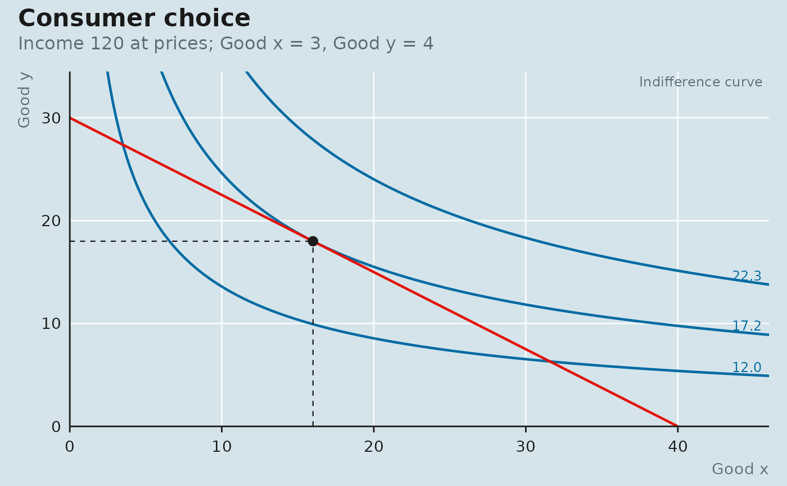

Two looks ship with the package. "academic" (the default) is for papers
and lecture notes: a parchment panel, a serif face, a tan-to-espresso
palette and a rust masthead. "economist" is the blue-grey panel, red
masthead and data palette of the newspaper's charts, with the device's
default sans face. Setting the
style changes the defaults of theme_econ(), the scale_*_econ() colour
scales, econ_masthead() and every plot_*() helper; any argument you
pass explicitly still wins.
Value
set_style() invisibly returns the previous style name so it can
be restored; get_style() returns the current one; style_colour()
returns one of the current style's role colours.
Details
The style is a session option (econscape.style), so put set_style() at
the top of a script or in .Rprofile. It is read when a plot is built:
a ggplot constructed under one style keeps that style if you switch
afterwards, so set the style first and construct the plot second.
Examples
old <- set_style("economist")
get_style()
#> [1] "economist"
style_colour("primary")
#> [1] "#006BA2"
plot_consumer_choice(cobb_douglas(0.4), budget(120, 3, 4))

set_style(old)